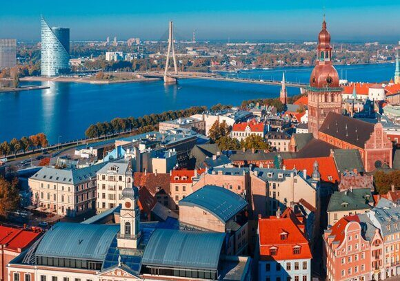

« НазадЧто нужно знать россиянам о въезде в Латвию в 2025 году На фоне обострения геополитической ситуации и ужесточения миграционных мер Евросоюза Латвия приняла принципиально новую политику в отношении граждан России. С 2023 года и вплоть до конца 2026 года въезд российских граждан в Латвию фактически запрещен, за исключением нескольких категорий лиц. Эта статья подробно рассматривает новый режим, акцентируя внимание на существующем запрете, особенностях оформления документов и редких случаях, когда въезд всё же может быть разрешен. Жёсткие ограничения: запрет на въезд для граждан России до конца 2026 года1.1. Суть запретаВ рамках новой миграционной политики Латвии введен категорический запрет на въезд граждан Российской Федерации. Это означает, что с 2023 года практические возможности пересечь латвийскую границу для большинства россиян существенно ограничены. Фактически, запрещается въезд в страну с туристическими, деловыми, спортивными и иными развлекательными целями вплоть до 31 декабря 2026 года. 1.2. Причины введения ограниченийОсновные мотивы – усиление контроля над миграционными потоками и соблюдение новых требований безопасности, принятых в рамках политики Евросоюза. Ограничения направлены на снижение рисков, связанных с иностранным влиянием, и защиту национальной безопасности Латвии. Эти меры стали ответом на геополитическую напряженность и санкционные режимы, вводимые против России. 2. Исключения из общего запрета: узкий перечень категорийХотя общее правило – запрет на въезд граждан России действует до конца 2026 года, законодательство Латвии допускает въезд только для нескольких исключительных категорий:
Эти исключения оформляются в порядке, строго регламентированном законодательством, и каждая заявка оценивается индивидуально. Однако даже лица из перечисленных категорий обязаны доказать наличие подтверждающих документов, чтобы их въезд был запрещен несмотря на общий запрет. 3. Основные этапы оформления въезда по исключениямНесмотря на то, что для большинства россиян въезд невозможен до конца 2026 года, для тех, кто подпадает под исключения, предусмотрен многоступенчатый процесс получения разрешения на въезд. Рассмотрим основные этапы процесса: 3.1. Сбор и подготовка документовПодготовительный этап является ключевым. К заявке на разрешение на въезд необходимо приложить обширный пакет документов, который включает:
Особое внимание следует уделить нотариально заверенным переводам документов на латышский или английский язык, поскольку оригинальные версии на русском языке обычно не принимаются. 3.2. Подача заявления через консульство или визовый центрПодача документов происходит через дипломатические или консульские представительства Латвии, имеющие территориальную компетенцию в соответствующем регионе (Москва, Санкт-Петербург, Калининград и т.д.). Заявитель может воспользоваться как онлайн-сервисами, так и подать документы лично. Большое значение имеет соблюдение всех требований по оформлению документации – малейшая ошибка может привести к отказу в разрешении на въезд. 3.3. Предварительное онлайн-рассмотрение и личное собеседованиеБлагодаря современным технологиям большая часть процесса переведена в онлайн-формат. На этапе предварительного онлайн-рассмотрения проверяется полнота загруженных документов. В случае обнаружения несоответствий или вопросов представитель консульства может назначить личное собеседование. Собеседование проводится для дополнительной проверки подлинности документов и подтверждения истинности заявленных обстоятельств. В этом случае необходимо предъявить оригиналы всех документов и быть готовым к дополнительным вопросам о целях визита. 3.4. Сроки рассмотрения заявкиВ зависимости от категории, срок рассмотрения заявки варьируется. Стандартные сроки для заявителей, чьи въезды разрешены по исключениям – от 10 до 45 рабочих дней. При гуманитарных основаниях сроки могут быть ускоренными – иногда решение принимается в течение 3-10 рабочих дней. Несмотря на возможность ускоренного рассмотрения, российским гражданам следует строго считать, что большинство категорий не имеют права на въезд до конца 2026 года. 4. Подробный перечень документов для оформления разрешения на въездДля тех немногих россиян, кто может претендовать на исключения, необходимо собрать следующий пакет документов: 4.1. Основные документы
4.2. Документы для гуманитарных случаев
4.3. Требования к переводам
5. Транспортные и служебные поездки: исключение из общего запретаРоссийским гражданам, работающим в сфере транспорта или выполняющим служебные обязанности, въезд входит в число исключений из общего запрета, если:
Для сотрудников транспортной отрасли порядок оформления позволяет строго регламентировать и ускорять процесс, но для большинства работников из этой сферы вопрос въезда остаётся трудным и ограниченным. 6. Гуманитарный въезд: крайняя мера в условиях запретаДля граждан России, въезд которых оправдан исключительно гуманитарными соображениями, предусмотрена специальная процедура. Гуманитарный въезд может быть разрешен в следующих случаях:
Для гуманитарного въезда срок рассмотрения заявки может быть сокращен до 3-10 рабочих дней. Однако даже здесь действует принцип исключения: большинство случаев остаются запрещенными, и разрешение выдается практическим минимумом заявлений. 7. Дополнительные меры контроля на границеПри пересечении латвийской границы действует жесткий режим проверки документов. Пограничные службы осуществляют:
В условиях действующего запрета российским гражданам рекомендуется быть готовыми к длительной проверке, предоставлению дополнительных документов и к тому, что отказ в пересечении границы будет стандартной практикой для большинства заявителей. 8. Практические рекомендации для россиян в условиях жесткого запрета8.1. Реалистичные ожидания и подготовкаРоссийским гражданам, планирующим попытки въезда в Латвию, необходимо осознавать, что общий режим запрещает въезд до конца 2026 года. Единственные законодательно разрешенные исключения относятся к узкому кругу категорий. Поэтому:
8.2. Консультации и онлайн-ресурсыОбязательно следует регулярно проверять официальные сайты латвийских консульств и визовых центров для получения актуальной информации. Рекомендуется:
8.3. Планирование альтернативных вариантов поездокИз-за всестороннего запрета на въезд большинство российских граждан не смогут попасть в Латвию до конца 2026 года. Поэтому:
9. Часто задаваемые вопросы (FAQ)Допускается ли въезд граждан России в Латвию в 2025 году? В общем случае гражданам России въезд в Латвию запрещен до 31 декабря 2026 года. Исключения возможны только для узко определенных категорий, например, для членов семей граждан Латвии/ЕС, обладателей ВНЖ, дипломатов и сотрудников транспортных компаний, а также лиц, въезд которых оправдан гуманитарными соображениями. Какие документы нужны для оформления разрешения на въезд по исключению? Помимо стандартного пакета документов (заграничный паспорт, анкета, фотографии, подтверждение финансовой состоятельности, страховка), необходимо предоставить подтверждение оснований для въезда – официальное приглашение, документы о родстве, справки о состоянии здоровья или копии вида на жительство. Все документы должны быть переведены на латышский или английский язык и заверены нотариально. Сколько времени занимает рассмотрение заявлений для исключительных категорий? Стандартные сроки составляют от 10 до 45 рабочих дней, однако для гуманитарных случаев процедура может сократиться до 3–10 рабочих дней. Можно ли подать заявление на разрешение на въезд в электронном виде? Да, многие этапы оформления переведены в онлайн-режим, но при обнаружении дополнительных вопросов может потребоваться личное собеседование в консульском учреждении. Что делать, если ваши планы не подпадают под исключения, но вы все равно планируете поездку в Латвию? В свете действующего запрета въезд в Латвию для большинства граждан России невозможен до конца 2026 года. Рекомендуется пересмотреть планы, рассмотреть альтернативные маршруты или посетить другие страны Шенгенской зоны, где ограничения могут быть менее жесткими. 10. Роль консульств и визовых центров в условиях запрета10.1. Основные функции консульствЛатвийские консульства и визовые центры играют ключевую роль в реализации новых миграционных мер. Их задачи включают:
10.2. Что нужно знать при обращении в консульствоПри планировании обращения в консульство или визовый центр обязательно учитывайте:
11. Заключение и выводыНа данный момент въезд граждан России в Латвию является исключением, а не правилом. До 31 декабря 2026 года большинство российских туристов, бизнесменов и спортсменов не смогут пересечь латвийскую границу. Только представители строго определённых категорий, имеющие подтверждение родственных связей, вид на жительство, или въезд по гуманитарным соображениям, могут рассчитывать на получение разрешения. Важно понимать, что строгие ограничения направлены на соблюдение национальной безопасности Латвии в условиях влияния международных санкций и политической напряженности. Поэтому при любых попытках оформления въезда россиянам следует быть готовыми к длительной проверке документов, возможным отказам и необходимости предоставления дополнительных подтверждений. Следует отметить, что в текущих реалиях большинство россиян должны срочно адаптировать свои планы, учитывая, что въезд в Латвию преждевременно возможен лишь для исключительных случаев. Планируя поездку, обязательно консультируйтесь с представителями консульства, внимательно следуйте новым требованиям и помните, что нарушение установленных норм может привести к административным мерам или даже запрету на въезд в будущем. Получите загранпаспорт за рекордно короткий срок с «Севером»!Нужен загранпаспорт срочно? Паспортно-визовый центр «Север» поможет оформить его в кратчайшие сроки! Более 25 лет опыта, оперативность и индивидуальный подход – гарантия того, что ваша проблема решится быстро и без лишних хлопот. Звоните прямо сейчас +7 925 585-41-95 и отправляйтесь в путь уже на этой неделе!
|
Комментарии
Комментариев пока нет